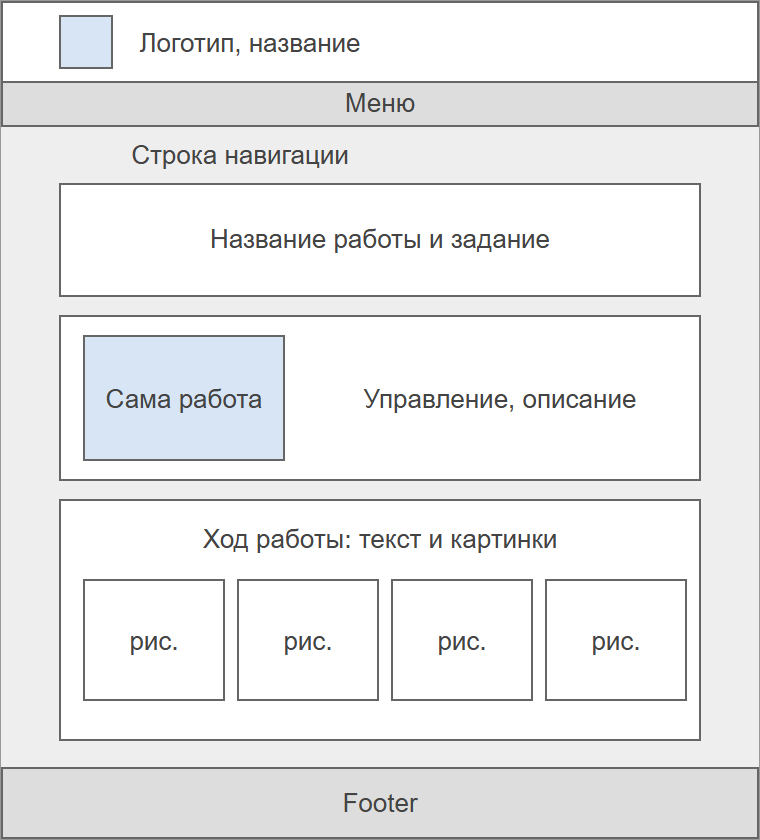

Курсовая работа
Курсовая работа пока не готова. Когда она будет выполнена, она появится на этой странице.
Что здесь будет

Страница курсовой будет оформлена так же, как и страницы лабораторных работ, чтобы весь сайт оставался в одном стиле. На ней планируется разместить:
- тему и задание курсовой работы;
- саму работу или ссылку на нее;
- описание хода работы со скриншотами;
- выводы.
Пока можно посмотреть уже готовые лабораторные работы.